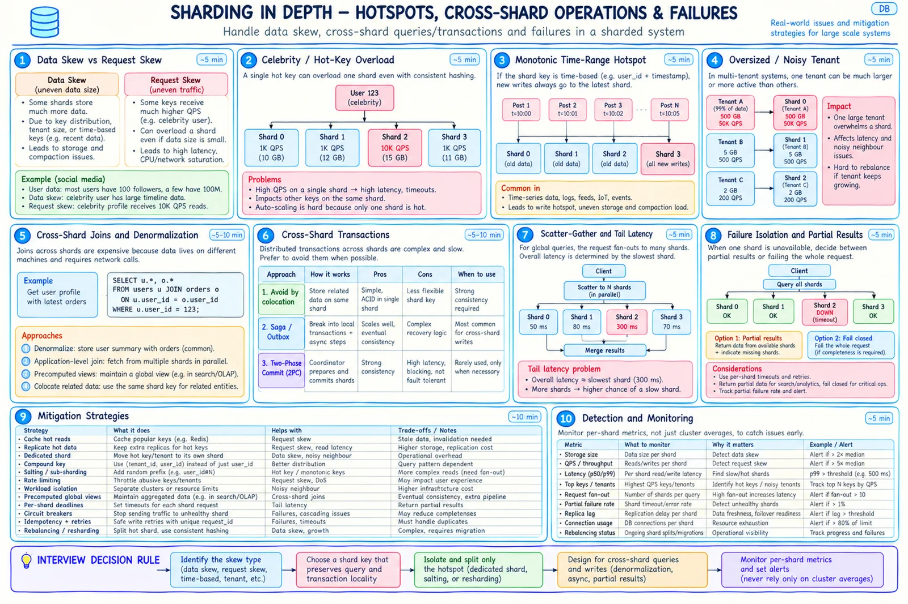

Topic · Sharding in Depth
Hotspots and Resharding
Celebrities, newest-range writes, and giant tenants - then moving data online with snapshot + CDC + validation + epoch cutover.


Quick Revision
- A hot key stays on one owner no matter how even the hash is.
- Time-only keys send every new write to the newest shard → hash prefix + time bucket.
- Giant tenant → dedicated shard or
tenant_id + hash(entity_id). - Skew =
max ÷ medianper shard for bytes and QPS. - Online move: snapshot → CDC replay → validate per bucket → new epoch → canary → read-only rollback window.
Hot shards and skew
- Celebrity key - cache in CDN/L1/L2 → replicate read-only data → coalesce and rate-limit → dedicated shard → split big collections with compound key → precomputed read models → pull (not push) celebrity feeds.
- Time-range hotspot -
(hash(device_id), day), multiple active buckets, sub-shard current interval, roll old ranges to cold storage, separate ingest log. - Oversized tenant - dedicated shard, sub-shards, tenant replicas, quotas, tenant-aware migration.
- Detect - per shard and top key/tenant: bytes, rows, growth, QPS, CPU/IO/connections, p99, throttles.
storage_skew = max(shard_bytes) / median(shard_bytes) traffic_skew = max(shard_qps) / median(shard_qps)
Online resharding

- Provision targets with headroom.
- Record snapshot boundary / log position.
- Copy historical rows for moving buckets.
- Capture and replay later writes in order (CDC/outbox), idempotently.
- Shadow-read sampled keys.
- Validate per bucket: counts, checksums, offsets, invariants.
- Quiesce only for a tiny final delta.
- Atomically publish a new shard-map epoch.
- Canary and watch redirects/errors.
- Keep the old copy read-only for rollback; delete after backup and verification.
- Deletes - versioned tombstones so replays can't resurrect rows.
- Cutover - old owners redirect, never silently accept writes; avoid uncontrolled dual writes.
- Changing a bad key - same as a full migration: new route, backfill, CDC, validate, versioned switch, rollback, decommission.
- Mutable shard key - treat changes as a move with versioning and redirect/alias.
Trade-offs
| Choice | Benefit | Cost / risk |
|---|---|---|
| Dedicated hot shard | Strong isolation, quick fix | Ops overhead, later rebalancing |
| Key salting / sub-sharding | Splits one hot collection | Reads fan out and merge |
| Stop-the-world move | Simple | Downtime |
| Snapshot + CDC | Online, rollback-friendly | Copier, catch-up, validation tooling |
| Dual write | Keeps both updated | Ordering, partial failure, reconciliation |
| Range split | Targets one hot/large range | Boundary management |
| Consistent-hash rebalance | Moves affected ranges | Still physical movement |
| Directory tenant move | Moves one tenant | Metadata dependency |
Failure modes
- Balanced rows, hot shard - per-key QPS; cache, replicate, isolate, salt.
- Newest shard gets all writes - hash-prefix time buckets, split latest range.
- Giant tenant exhausts a shard - dedicated shard or sub-sharding.
- Migration loses writes - snapshot boundary + replay all changes.
- Migration resurrects deletes - versioned tombstones, ordered idempotent replay.
- Success judged by cluster totals - validate per bucket + sampled reads.
- Migration overloads production - throttle by SLO, pause on alerts.
- No rollback - keep old shard read-only for a safety window.
Interview practice
Answer aloud, then reveal.
Freshworks SDE 2: sharding, the celebrity problem, and changing server count.
Celebrity = request skew on one key. Cache/replicate reads, isolate, sub-shard, rate-limit. Avoid modulo over server count; use buckets or consistent hashing and still migrate and validate bytes.
Amazon SDE 2: Twitter - replication vs sharding and celebrity partitions.
Shard by owner key, replicate each shard; sortable global tweet IDs but not as range keys; timelines derived - push for normal users, pull for celebrities; cache viral content.
Atlassian P40: friend counts and Google-Docs document placement.
Materialized counter updated from relationship events + reconciliation. Docs: route by document_id with buckets/consistent hashing, weight by capacity, move hot docs via versioned directory; very hot docs need a bigger owner.
Does consistent hashing solve hot keys?
No - one key still has one owner. Cache, replicate, isolate, or sub-shard.
Move a shard with zero downtime?
Snapshot, copy, replay CDC, validate, publish new epoch, canary, keep old read-only. Idempotent writes and tombstones are essential.
Hot shard vs hot key?
A hot shard can come from many warm keys or one hot key. More shards fix the first, not the second.
How do you test sharding before production?
Replay skewed traffic, add/remove nodes, measure cross-shard %, inject slow/down shards, run a full split + rollback, restore backups, roll schema everywhere.